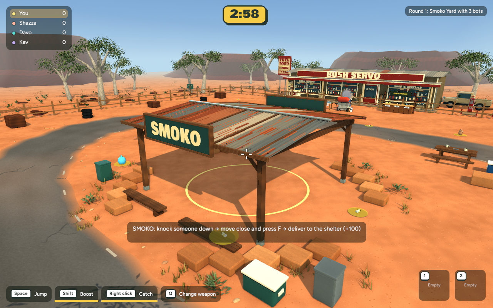
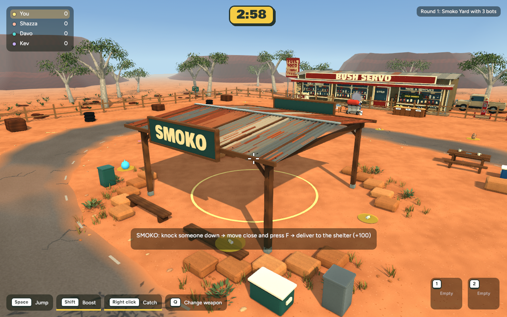
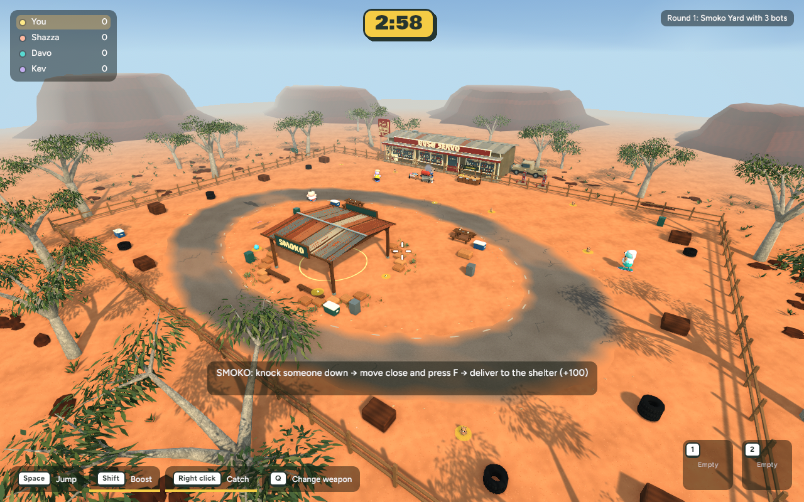
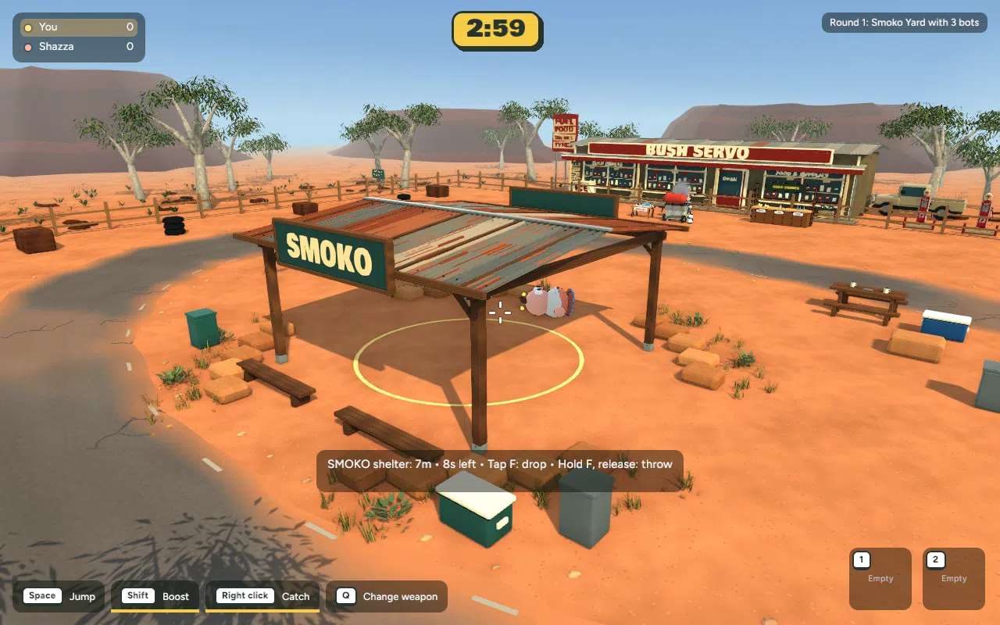

Actual native game captures — 30 October 2026. Local review; not published.
Uneven dusty shoulders, chipped stone edges, fuller dry planting and scattered gravel. Gameplay and existing stone bounds preserved.




Native mean frame cost +0.03–0.05 ms in matched samples. +1,926 triangles; nine surroundings batches unchanged. Browser-device performance still unmeasured.
This is a restrained first slice; terrain coverage and silhouettes remain visibly simpler than the concept.
Verification and recovery